Inkscape’s brush,
filter, and paint capabilities allow you to transform ordinary strokes of
a pencil or pen tool into large swathes and splashes of color with
textures suggesting mechanical scribbles with a color pencil or a looser,
more relaxed back and forth movement with a pen.
In this tutorial, you’ll learn how to do the following:
Review how to move objects between layers.
Edit the shape of an object using the Eraser tool.
Stretch a shape along a path and edit the result using the Pattern
Along Path live path effect feature.
Create a variety of scribble effects.
Combine a scribble effect with a mask.
Getting Started
In this tutorial, you will continue applying different styles of paint
brush and drawing pencil to a template file you were working on in the last
tutorial, Tutorial 14, Part B. You will work with the Calligraphy Pen tool
and learn how to create a scribble texture. You will add details using the
Pattern Along Path function to improve the composition of the poster
artwork.
Below is the finished poster that you will work toward in this
tutorial.
Finished poster.
To begin working, File > Open file Brushes.svg, which you
were working on in the last tutorial. If file Brushes.svg is not
available, then download file Tutorial14C_start.svg
and store it in a convenient location on your computer. Choose File >
Open to open it.
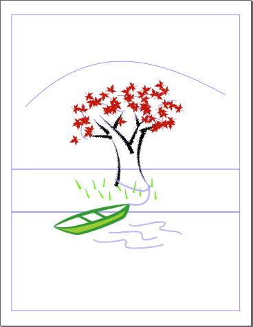
Start file for Tutorial 14, Part C.
Choose File > Save As, name the file Brushes.svg, and
store it where you deem best.
You will be using layers to create your artwork.
Click on the View Layers icon ().
Note that there are already five layers, each containing a specific
component of the artwork.
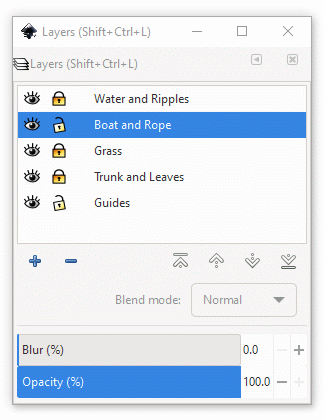
Layers dialog box showing five layers.
Moving Objects Between Layers
You can give the poster imagery a touch of stylized depth by moving a
couple of tufts of grass from in back of the rope tied around the tree to in
front of the rope, suggesting that the rope is tied right against the tree
trunk, behind the grass tufts.
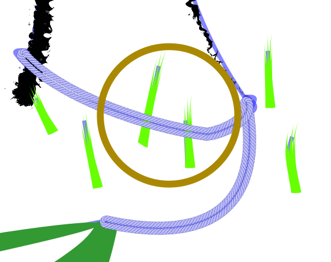
These two tufts of grass are to be moved
forward.
You can’t access the tufts of grass right now because they
are located in the Grass layer, which is locked, and the Boat
and Rope layer is the current active layer.
Click on the Locked layer icon () of
the Grass layer to unlock that layer ()
and make the tufts accessible for manipulation.
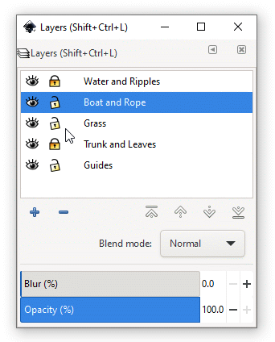
Unlocking the Grass layer.
Click on the Grass layer bar to highlight it and make the
Grass layer the active layer.
Group-select the two tufts of grass using <Shift>-click.
(Marquee-select also works here.)
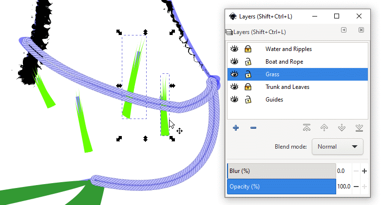
Making the Grass layer active and group-selecting
the two tufts of grass.
With the two tufts selected, you will now move them from the
Grass to the Boat and Rope layer.
Press <Shift>-<PgUp> to move the tufts of grass up one
layer in the layer stack. The Boat and Rope layer highlights,
signaling that it is now the currently active layer.
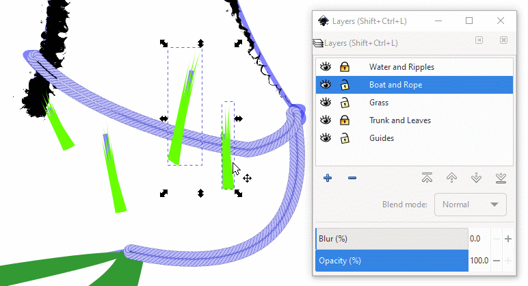
Moving the two tufts of grass up one layer.
Click on the two Unlocked layer icons to the Grass
and Boat and Rope layers to lock them. You are done with these
layers for now.
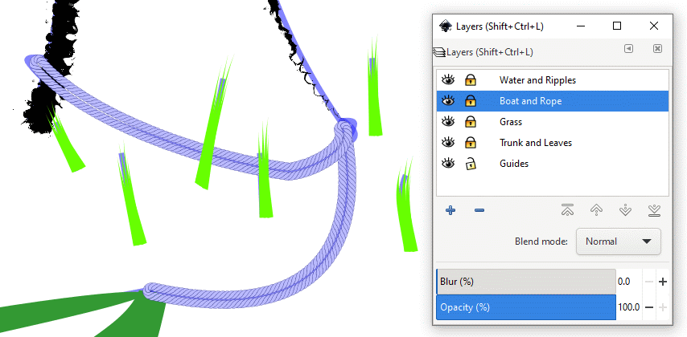
Locking the Grass and Boat and Rope
layers.
File > Save.
Simulating a Paintbrush Stroke
In this section, you will use the cloud image below as the template to
draw a new version in which the stroke looks as if you had dipped a paintbrush
into paint and drew the cloud outline with one stroke.
The cloud motif template is situated just to the right of the
artboard. The stroke has been given a gradient at the lower left to texture
the color. When the cloud has been modified, it will look as if a paintbrush
had been applied and lifted off where the blue color lightens.
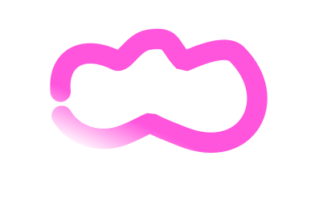
Cloud motif template.
Select the Node tool () so you can see the structure of the cloud
template image. You can see the gradient handles in the lower left of the
image.
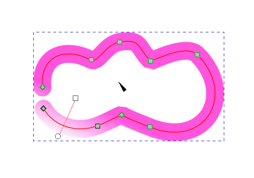
Cloud template in Node tool view.
Choose Object > Fill and Stroke…, Stroke paint tab. Note
that the Linear gradient icon (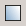) is highlighted, indicating that the cloud image
has a gradient attached to it.
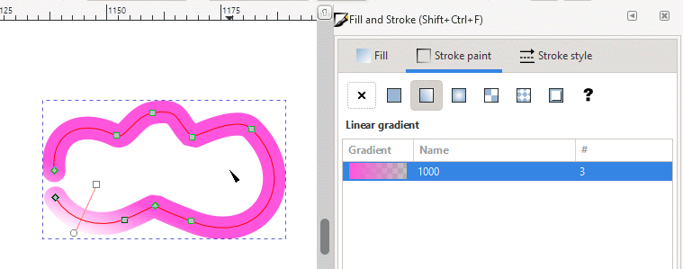
The Linear gradient icon is highlighted.
You will remove the gradient from the cloud image by clicking on
the Flat color icon (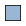) just left of the Linear gradient
icon. The cloud motif turns a solid blue color.
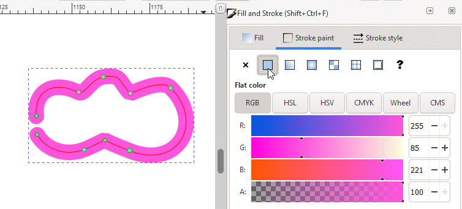
Removing the gradient.
Now comes the interesting part of this section. Download art file
2174691.svg. This file contains
an image of an ink spot, say, like the ink spot in Robert Louis
Stevenson’s book Treasure Island. This image will provide the
texture needed to simulate a paintbrush stroke.
This art file of an ink splotch can also be downloaded from https://svgsilh.com/image/2174691.html
at SVG SILF, where there are
many other examples available for free download (you can enter splat ink
grunge in the search bar for more ink spots).
The ink spot is a large image. You will rescale it to a manageable size,
rotate it, squash it almost totally flat, and then apply it to the cloud
motif as a pattern using the Pattern Along Path LPE function
(Live Pattern Effect).
Note: this Pattern Along Path LPE function is different
from the Pattern Along Path LPE function used to create the rope in
the previous tutorial (Tutorial 14, Part B). You access it by choosing
Path > Path Effects… and then selecting an effect from an effects
GUI (Graphic User Interface). Once the path has been
modified, you can still edit it using the Select tool ()
and the Node tool ().
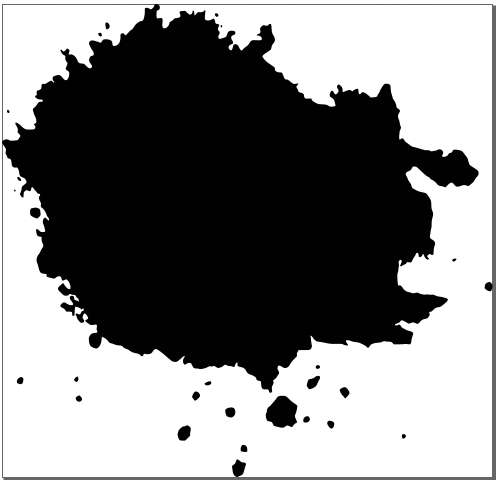
Our starting inkspot.
The inkspot has a couple of trailing extensions on its right side
that can contribute to making fine hair-line traces for the end of the
cloud motif’s outline, as if a camel-hair paintbrush was being used.
We chose to rotate the inkspot by 180 degrees to make it a little easier to
smoothen the opposite side to make a smooth bullet-shaped head.
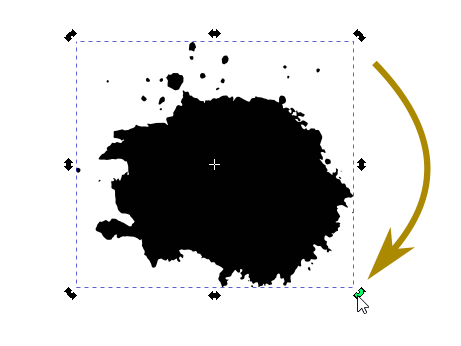
Rotating the inkspot.
To start the smoothening process, select the Eraser tool in
the hidden tools area found at the bottom of the toolbox (click on the
right-pointing arrow ()). Set the Width to 20.
20 is a good width with which to start. Use the Eraser as you
would a regular rubber eraser. Press the left mouse button and move the
mouse back and forth as if you were using a rubber eraser. It traces a red
active path that disappears in a second or two once the underlying colored
pixels have been erased. If you are dissatisfied with what you see or made
a mistake, undo your work by clicking on the Undo icon () in the Tool Controls
bar or by pressing <Ctrl>-Z until you get back to where you want
to be.
With the Eraser, erase all the small spots of ink that you find
splattered around the main splotch.
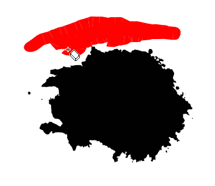
Erasing extraneous spots with the Eraser tool.
Examine the right side of the ink splotch to assess how much you
want to erase to create a smooth side. This side will serve as the head
of the paintbrush stroke that you will create shortly.
With smooth, even strokes of the Eraser tool, shave off the
protuberances on the right side of the ink splotch.
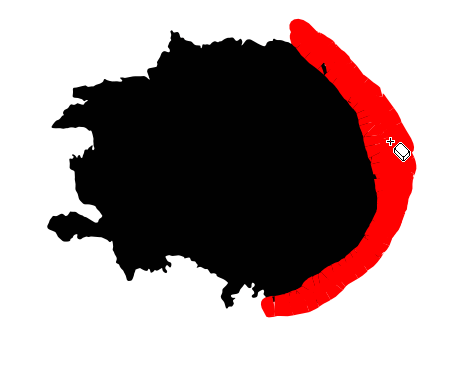
Erasing rough edges and smoothing the right side of the
inkspot.
It is okay to leave one or two protuberances on the top and bottom
sides. They will be stretched out to simulate an occasional, random brush
hair streak that can help to texture a camel-hair brush stroke.
Resulting smoothened head of the inkspot.
Now, squash the ink splotch. No, you aren’t going to step on
it. With the Select tool (), use a top or bottom sizing handle to
make the ink shape thinner so you can see how it can be stretched as a
pattern along a path and made to look like a brush stroke.
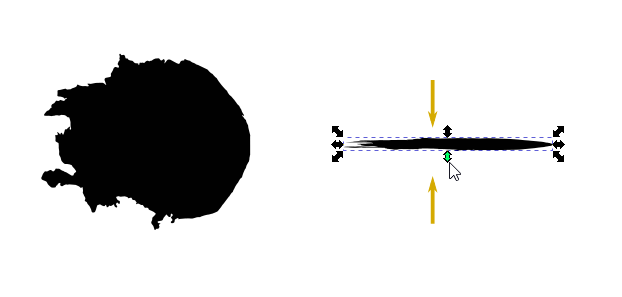
Squashing the inkspot.
With the flattened ink splotch still selected, press <Ctrl>-C or
choose Edit > Copy to copy the image to the clipboard. Then, select
the cloud motif. (Don’t group-select it.)
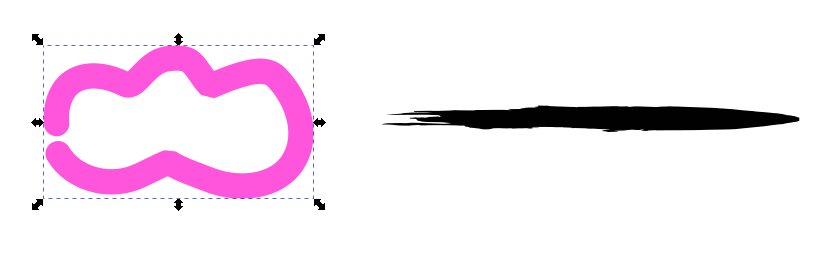
Selecting the cloud template image (the inkspot has been
saved to the clipboard).
Choose Path > Path Effects… The Path Effects dialog
box appears. Click on the Add path effect plus sign ()
at the bottom of the dialog box.
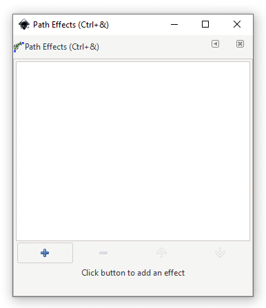
Path effect dialog box.
The Live Path Effects Selector GUI appears. Scroll down and
select the Pattern Along Path button.
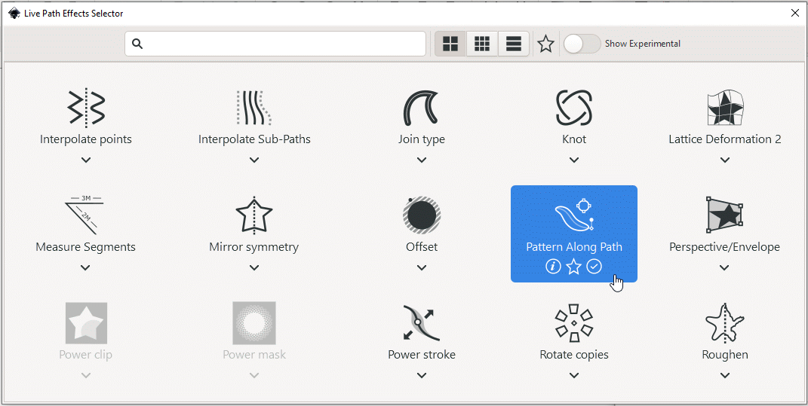
Selecting the Pattern Along Path function.
The Path Effects dialog box reappears showing that the
Pattern Along Path LPE has been selected. Note that the default
Pattern copies is Single, stretched. That setting is what we
want in order to have the ink splotch stretched along the cloud motif
path.
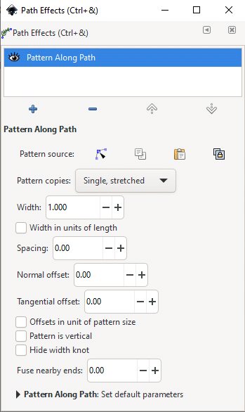
Path effect dialog box showing Pattern Along Path
selection.
The ink splotch, which is the pattern you will put on the
cloud motif path, is being stored in the clipboard. To access it, click on
the Link to path in clipboard icon ()as the Pattern source.
What you see might absolutely bewilder you. Good. You will fix that.
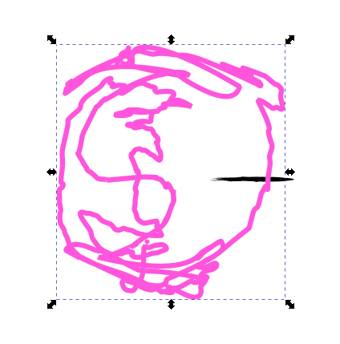
Applying the Pattern Along Path path
effect.
Select the Node tool (). The structure of the cloud motif path
appears with its nodes. Note that the Width handle is a significant
distance away from the node it’s associated with.
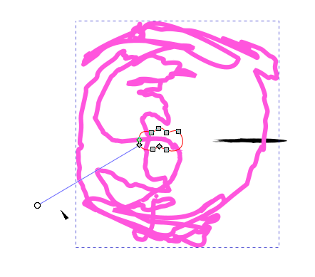
The cloud template image in Node tool view. Note how far
out the Width handle is located.
Because the Width handle is so far from the artwork, it makes sense to
find out if moving it in toward its associated node might help fix the
problem. Click-drag it in slowly and see how the “modern art”
changes.
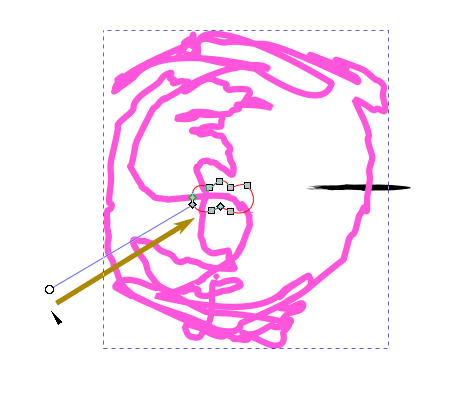
Direction in which to move the Width handle.
The Width handle turns red when you click-drag it in. See how the
blue shape changes to conform more to the cloud motif path.
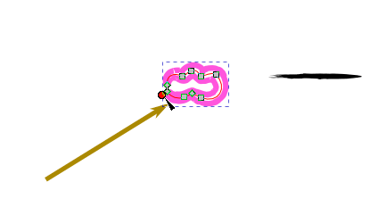
Shrinking the modern art figure by moving the Width handle
in toward the starting point of the line.
When the Width handle has been moved inward enough (you determine
what is enough), click on the Dropper tool ().
The curve does not have a fill color. You will fill it with the blue color
already in the stroke.
Click anywhere on the blue color. The cloud motif looks bloated right
now because both its fill color and stroke color are the same blue.
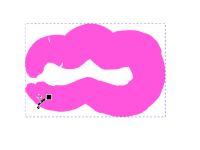
Giving the cloud motif a blue fill color.
With the cloud motif still selected, <Shift>-click on the
none color swatch () in the Color palette. The cloud motif loses a
significant amount of weight and finer stroke details become visible.
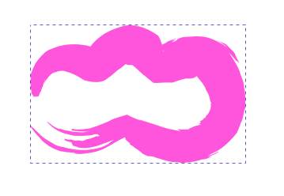
Setting the stroke color to none.
Select the Node tool () so you can see the cloud motif path and
Width handle.
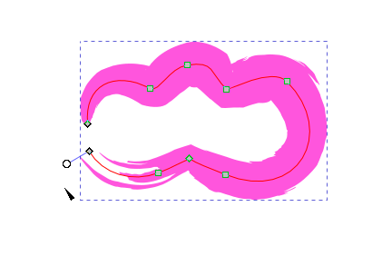
Node tool view.
Adjust the width of the motif path by moving the Width handle
in a direction that gives you the best results.
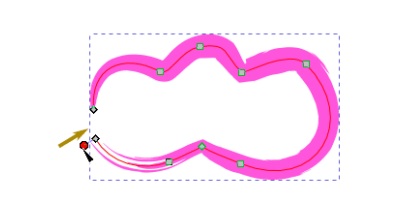
Fine-adjusting the stroke using the Width
handle.
Do fine-adjustment of the cloud motif shape by manipulating nodes,
for example, by changing nodes from smooth or symmetric to making them
corner nodes and vice versa, or by changing the curvature of line segments,
and just by experimenting with combinations of node and line segment
changes until you attain what you want.
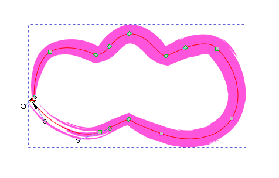
Fine adjustments.
When you’re done, compare your work with the original cloud
motif template.
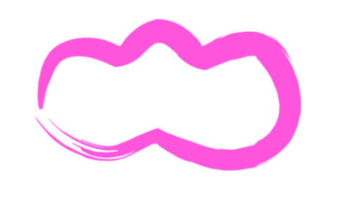
Finished paint-brushed cloud.
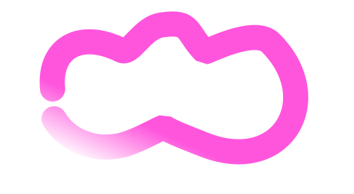
Original cloud motif.
File > Save.
Drawing Clouds Using the Pattern Along Path Live Path Effect
Now that you have created the cloud motif, it is time to put it to use by
applying it to the border of the poster and to a path you will create above
the tree.
Create a new layer for the clouds.
Click on the View Layers icon (), click
on the Add new layer plus sign ()
underneath the layer list to add the new layer, call it Clouds, and
move it to the top of the layer stack if it isn’t put there
automatically.
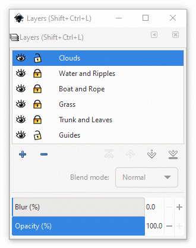
Adding a layer for the clouds.
You will now draw a rectangle using the border rectangle as a guide.
This rectangle will become the path for cloud motifs that will line the
border.
Select the Rectangle tool () and draw a rectangle that follows
the rectangle guide. It might have a color fill and, perhaps, a border with
the same or a different color — that is not important.
Note: the rectangle in the figure below has been made transparent
to help in visualization.
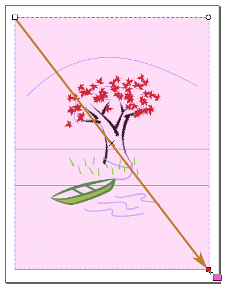
Drawing a rectangle across the poster space.
Click on the Dropper tool () and then click on an area of blue
color in the cloud motif to the right of the artboard to sample its
color.
Then, press the <Shift> key and, while continuing to press
<Shift>, click in the blue rectangle to copy the color onto the
stroke of the rectangle.
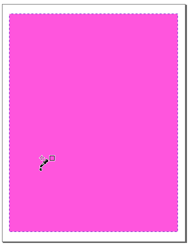
Giving the rectangle stroke color the same as the fill
color.
You will make the the underlying artwork visible by clicking on the
none swatch () in the Color palette. The rectangle’s color fill
disappears, but the stroke remains.
Now, choose Path > Object to Path to convert the rectangle to a path
that the Pattern Along Path LPE (Live Path
Effect) can use.
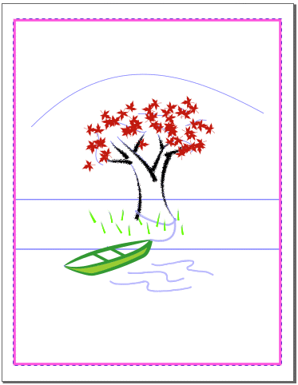
Setting the rectangle fill color to none. Only the stroke
is visible.
You will now put the cloud motif on the rectangular path.
Select the cloud motif with the Select tool ()
and choose Edit > Copy to place a copy on the clipboard.
Select the rectangle. Choose Path > Path Effects… >
Pattern Along Path.
In the Path Effects dialog box (see Step 14 in the previous
section), set Pattern copies = Repeated, check the Width in units
of length checkbox, and check the Offsets in units of pattern
size checkbox. Then, click on the Link to path in clipboard icon
() for the Pattern source to apply the
Pattern Along Path LPE.
Note that the emplaced cloud motifs have a colored stroke but no color
fill. You will change that.
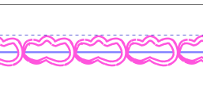
Applying the Pattern to Path Live Path
Effect.
If the cloud motifs are not group-selected, then click on one to
select the entire sequence, click on the Dropper tool (), and
click on an area of blue color in the cloud motif on the right side of the
artboard to sample its color. All cloud motifs are given a blue color
fill.
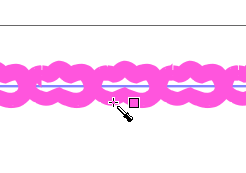
Setting the cloud fill color to blue.
With the border clouds still group-selected, eliminate their stroke
color (blue) by <Shift>-clicking on the none swatch () with the
Dropper tool (). The cloud motifs now look the way they’re
supposed to look.
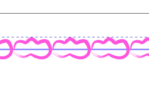
Setting the cloud stroke to none.
The current Spacing is 0.00 of the width of a cloud
motif. In other words, clouds touch each other on the path. They need to
be separated by a reasonable amount of space.
Spacing 0.00 between cloud motifs.
Let’s see how the border looks when the clouds are given a
spacing of 0.20 of a cloud width.
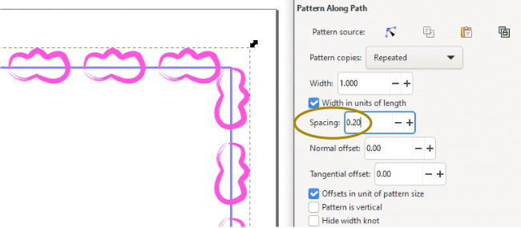
Spacing 0.20 between cloud motifs.
Let’s try out a cloud width of 0.40.
Spacing 0.40 between cloud motifs.
There is more breathing space between clouds. The triangle pattern
at the upper right corner is not a problem because it will shortly be
covered by the sun motif.
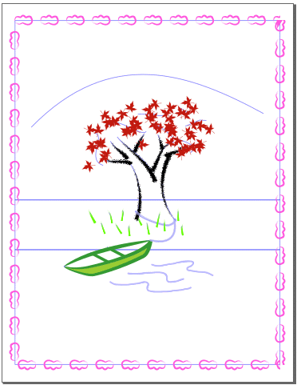
Cloud border created.
Now that the cloud border for the poster has been created, it’s
time to focus our attention on putting clouds on a path above the tree.
Start by drawing a path above the tree following the guide curve. Here,
we use the Pen tool (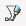).
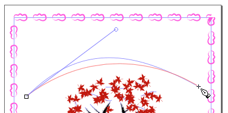
Drawing the path for the clouds above the tree.
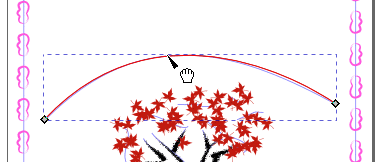
Drawing the path for the clouds above the tree.
Resize the cloud motif on the right side of the artboard by
two-and-a-half times (or 250% its original size).
Choose Object > Transform… > Scale. Set the Width to
250. If the percent sign (%) isn’t visible in the unit of
measurement text box to the right of the value text box, then select it
from the dropdown list. Check the Scale proportionally checkbox so
the Height will automatically change with the Width.
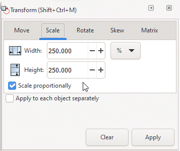
Transform object dialog box, Scale panel.
Click on the Apply button at the bottom of the dialog box.
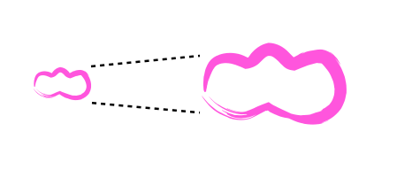
Resizing the basic cloud motif to 250 percent its
original size.
Select the enlarged cloud motif and choose Edit > Copy to copy
the motif to the clipboard. Then, select the path you just created above
the tree figure.
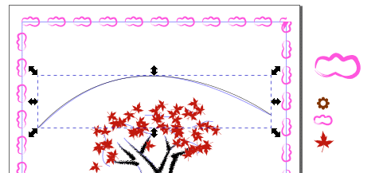
Copying the cloud motif to the clipboard and then selecting
the cloud path.
As you had done in Step 14 in the previous section, choose Path >
Path Effects… > Pattern Along Path.
In the Path Effects dialog box, set Pattern copies =
Repeated, check the Width in units of length checkbox, and check
the Offsets in units of pattern size checkbox.
Then, click on the Link to path in clipboard icon ()for the Pattern source to apply the Pattern Along
Path LPE.
Note that the emplaced cloud motifs have a colored stroke but no color
fill. You will change that in a little bit.
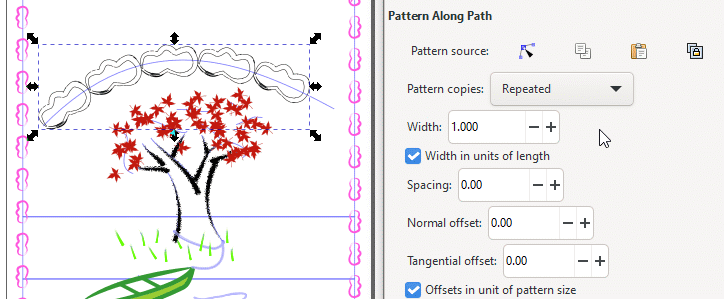
Applying the cloud motif to the selected path.
We need to have only three cloud motifs evenly spaced and centered
on the path. There are currently five clouds touching each other.
Change the Spacing to 1.00.
Setting the cloud spacing to 1.00.
There is still space at the right end of the path. You will improve
upon that feature by change the Spacing to 1.20.
Setting the cloud spacing to 1.20.
Let’s do some fine-adjusting that’s not really necessary,
there is harm in doing it, and it might even satisfy an impulse of somebody
with obsessive compulsion. Set the Spacing to 1.26.
The entire path is used and obsessive compulsion has been satisfied.
Setting the cloud spacing to 1.26.
With the clouds selected, click on the Dropper tool () and
then click on an area of blue color in a border cloud motif to sample its
color.
Setting the cloud fill color to blue.
Now, with the Dropper tool (), <Shift>-click on the
none swatch () in the Color palette to eliminate the stroke on the clouds
(the stroke has thickness and interferes with the cloud geometry).
Setting the cloud stroke to none.
With the Select tool (), click on the Zoom to fit page in
window icon () in the Tool Controls Bar to resize
the artboard to fit the work window.
Cloud work finished.
Imitating Pencil and Pen Scribbles Using the Hatches Path
Effect
Drawing the Lawn with Fine Scribbles
In this section, you will create a “lawn” look by giving the
middle panel a green fill and then using the Hatches path effect to
make the green area look like it was drawn with a colored pencil. The strokes
are to be thin and mechanical in appearance.
Select the Rectangle tool (). Draw a rectangle over the
middle panel and click on the green color swatch in the Color palette at
the bottom of the working window.
Giving the lawn rectangle a green color fill.
Choose Path > Path Effects… Click on the Hatches
(rough) path effect icon in the Path Effects menu.
Hatches (rough) icon.
The Path Effects dialog box appears and the green rectangle
changes into a sloppily drawn sine wave, ready to be adjusted to look like
a grass lawn.
Selecting the Hatches (rough) path effect.
Click on the Node tool () to see the structure behind the green
waves.
Nodes appear on the rectangle corners allowing you to adjust the roundness
of the corners (the circle at the top right corner), and two squares for
adjusting rectangle length and width.
The four nodes inside the rectangle allow you to change the
number/density of the sine waves and how they are angled.
Viewing the lawn rectangle in Node tool view.
The two left-hand circles are reference points (or zero points, if
you will) for their corresponding Scale/Direction node and Bend node. You
can move all four around to achieve different effects.
You will work with Scale/Direction node (upper left diamond). The sine
waves will remain straight, so you will not need the Bend node (lower right
diamond).
Hatch nodes.
To achieve the look of grass, you need to move the Scale/Direction
node in toward its corresponding reference circle. Move it in slowly to
see how its action affects the look of the sine waves. Moving this node in
toward its reference point causes more sine waves to be created, increasing
the density of the waves in the lawn rectangle until they become
indistinguishable from each other, creating the impression of lawn
grass.
The Scale/Direction node is very sensitive to placement and you might
find that Inkscape reacts relatively slowly to node movement. The slowness
arises from Inkscape performing some intense calculations behind the scenes
to maintain the “sloppy” or quasi-random look of the sine waves
as more waves are created and sized to fit properly within their rectangular
confine. If response time lengthens, then slow down in moving the
Scale/Direction node further so Inkscape can catch up with you. Do give
yourself time to get used to how this feature works.
Because the Scale/Direction node also acts to give the sine waves an
angle of inclination, keep the node even with its reference point. Again,
note how sensitive the results are to node placement.
The Scale/Direction node is to be moved next to its
reference node.
To make fine adjustment easier, zoom in on the nodes. The figure
below has a magnification of 1200 percent. At this magnification, or higher
or lower, you can position the Scale/Direction node very close to its
reference point and finely adjust it to be exactly level with the point,
resulting in vertical sine wave spikes.
Magnifying the view to enhance precision in positioning
the Scale/Direction node.
You can create your version of a panel of lawn grass using the
Hatches parameters in the dialog box below.
Fine-adjusting hatching parameters.
When the lawn appears how you want to appear, click off the artwork
to deselect it.
The lawn is done.
File > Save
Drawing the Lake Water with Broad Scribbles
You will now create the lake water using a gradient fill and the
Hatches path effect.
Draw a rectangle over the lowest guideline panel and give it a color
fill of navy blue, found in the Color palette at the bottom of the work
window.
Drawing the water rectangle with a Navy blue color
fill.
If the Fill and Stroke dialog box has been closed, then
bring it back up by choosing Object > Fill and Stroke… > Fill
tab.
Click on the Linear gradient icon ().
The solid Navy blue color fill changes into a gradient.
Converting the solid Navy blue color fill into a
gradient.
Click on the Create and edit gradients tool icon () in the toolbox. The Gradient tool appears
across the width of the rectangle.
Gradient tool activated.
With the Gradient tool cursor (),
click-drag the square node of the Gradient tool to the top of the
rectangle to move the dark Navy blue shading to the top, and the circular
node to the bottom to move the white shading to the bottom.
Note that the nodes turn from blue to red, indicating that they are
active.
Reorienting the lake water gradient from horizontal to
vertical.
If the Path > Path Effects dialog box has been dismissed, then
choose Path > Path Effects… to bring it back up. Click on the
Hatches (rough) path effect icon in the Path Effects menu.
Select the Node tool () to view the underlying structure of the
path effect. The Scale/Direction node and Bend node appear along their
reference points.
Viewing the water rectangle using Node tool
view.
As you did with the lawn grass path effect, move the Scale/Direction
node in toward its reference point to increase the density of sine waves in
the water rectangle. Note how the gradient is maintained as sine waves are
added. Also, note how slow Inkscape is in keeping up with the movement of
the cursor — there is much computation taking place behind the scenes
to maintain the scribble look.
Zoom in to the nodes — the magnification is 1200% in the figure
below — to fine-adjust the density of sine waves and their angle of
inclination.
The angle of the waves below is about 40 degrees from the horizontal.
You achieve this inclination by moving the Scale/Direction node in toward
its reference point and positioning it below the reference point by about
50 degrees. Note how sensitive the Scale/Direction node is to positioning.
The more you use this feature, the more your sense develops in using it with
comparable sensitivity and intuition.
Moving the Scale/Direction node in toward its reference
point and positioning it at an angle below the horizontal.
Demagnify the artwork (akin to taking a step back) to see whether
the character of the water scribbles looks the way it’s supposed to,
and then remagnify to make fine adjustments.
Fine-adjusting the water scribbles.
When you’re satisfied with what you see, choose Edit >
Deselect to deselect the artwork.
The stylized lake water is done.
File > Save.
Rearranging Layers
Now is a good point in time to rearrange layers into an order that makes
sense.
In the last section, you have been in the Lake and Lawn layer. It
is located topmost in the layer stack that makes up your artwork. In
reality, a lawn should lie underneath a tree and lake water should lie
underneath a boat. It only makes sense that the Lake and Lawn layer
should be put underneath those other layers. It can lie above the
Guides layer.
The Lake and Lawn layer was created in the last section, is
currently active — it is highlighted in the Layers list — and
is topmost in the layer stack.
The Lake and Lawn layer is currently topmost in the
layer stack and active.
You will move the Lake and Lawn layer down in the stack until
it sits ontop of the bottommost Guides layer.
Click on the Lower the current layer button and wait for a few
second while Inkscape carries out behind-the-scenes calculations, after
which the Lake and Lawn layer reappears one level down in the
stack.
Repeat the above step until the Lake and Lawn layer is located
immediately above the Guides layer. Be patient with Inkscape while
it calculates — that is one of its jobs.
Lowering the Lake and Lawn layer to second from the
bottom in the layer stack.
Hide the Guides layer by clicking on its open Show/Hide
eye icon (). The Guides layer disappears and the Show/Hide
eye icon closes ().
Hiding the Guides layer by clicking on its Show/Hide
icon.
The prow of the boat has the same color as the grass lawn, and so it
disappears — green against green. You will lighten the green color of
the lawn so the boat prow will become visible by virture of contrast.
Select the grass lawn rectangle with the Select tool (),
and give it a fill color of 4ab62aff from the Fill panel in
the Fill and Stroke dialog box.
Click off the artwork to deselect it.
Giving the lawn a lighter green color fill.
File > Save.
Text with Scribbles
A challenging technique to explore involves making regular text look as if
it was scribbled. It adds to the composition of a piece of artwork when the
scribbled look is central to its theme.
There are two techniques involved in working with scribbled text. They
both use the Hatches path effect. Letters that are open to the outside
are treated one way. Letters that contain enclosed spaces need to be treated
differently to retain those open areas.
Type LAKESIDE DESIGNS using a sans-serif font. We used Myriad Pro,
bold, 72 points, 72 point leading (space between lines), and centered
alignment.
Starting text.
The text contains letters that are entirely open to the outside and
letters that contain enclosed spaces. Because we need to treat the two
types of letters differently, we need to separate them as groups. There
are only three closed letters to separate from the pack: one A and two
Ds.
Convert the text, which is a single object, into a single path by
choosing Path > Object to Path.
Break the text into individual letter paths by clicking on the Ungroup
selected groups icon in the Tool Controls Bar.
Converting the text into individual letter
paths.
Deselect the text and then select the A with the Select tool () so you can move the letter. Click-drag the A away from the main body
of the text.
Moving the letter A away from the main body of the
text.
Click on a D with the Select tool () and move it away from the main text. Do the same for the second
D.
Both Ds moved away from the main body of the
text.
You will apply one scribble technique to the main body of the
text.
Marquee-select the main text body and then click on the Group
selected objects icon () in the Tool Controls Bar.
Grouping the main body of text.
Choose Path > Path Effects… and select the Hatches
(rough) path effect. The Hatches (rough) dialog box appears and
default hatch settings are applied to the text.
Default application of the Hatches path
effect.
No letters of the main text are visible because of the default
values of the Hatches parameters. Make the scribbles less random in
appearance by eliminating the default randomness created by the default
settings. Change all Hatches parameters to 0.
Setting all parameters to 0.
Click on Node tool (). The Hatches nodes and reference
points appear. You will work with the Scale/Direction node (top
right node) to transform the chicken scratches that are the letters into
actual legible text.
The main text in Node tool view.
Move the Scale/Direction node until it is close to and
underneath its reference point (open circle). When you move the node
slowly, you can see how it has an immediate effect on the chicken scratch
markings as they transform into individual letters.
Moving the Scale/Direction node to create thick,
horizontal scribble strokes.
The main body of the text has been transformed into letters made up
of coherent, horizontal scribbles. All of these letters are open to the
outside and do not contain any enclosed spaces. The remaining three letters
do contain spaces that have no access to the outside, and so will be
treated differently.
Start with the letter A. It has already been converted into a path from
Step 2 earlier.
The basic letter A, already converted into a
path.
Click on the A with the Node tool () so you can
see it as a collection of nodes and paths. You can manipulate these paths
more easily when you can see them.
The letter A in Node tool view with nodes and paths
visible.
With the Node tool () still active, choose Path > Break Apart.
Inkscape now “sees” the A as two separate paths instead of as
a path group. The inner white space disappears. It’s still there
but is now underneath the larger figure in the image/path stack.
Breaking the single A path apart into two separate
paths.
With the Node tool () still active, <Shift>-click on the inner
triangle. The inner triangle is enclosed in its own dashed bounding box.
<Shift>-clicking on the inner triangle.
With the inner triangle still selected, click on the Select tool
(). A Select tool bounding box now appears encompassing the
inner triangle, which is not visible right now.
Bring the inner triangle to the top of the image stack. Click on the
Raise selection to top icon () in the Tool Controls Bar.
Inner triangle in Select tool view.
With the inner triangle still selected, click on the white swatch
in the Color palette. The inner triangle is now visible.
Inner triangle with white fill color.
Choose Path > Path Effects… and click on the Hatches
(rough) icon if the Path Effects dialog box isn’t
active. A “stylized” drawing of the A appears. Note that there
is a “scribbled” drawing of the inner triangle inside the
black scribbles.
Applying the Hatches path effect.
Both paths will be transformed as you zero the Hatches path
effect parameters in the dialog box. Change all parameters to 0, as
shown in the figure below.
Zeroing the Hatches path effect parameters.
Click on Node tool (). The Hatches nodes and reference
points appear. You will work with the Scale/Direction node (top
right node) as you had done in Step 9 to transform the scribbled lines into
actual legible text.
Hatches applied, Node tool view.
Click-drag the Scale/Direction node toward and underneath its
reference point. By positioning the Scale/Direction node underneath the
reference point, your can make the scribble lines horizontal. You can make
them thicker by moving the node further down from the reference point, or
thinner by moving it closer to the reference point. You determine how thick
or thin you want the scribble lines to be.
Scale/direction node moved to create horizontal
scribbles.
Click away from the A to deselect it. Select the Select tool () and use it to move the stylized A into position with the main body
of text. Use a guideline, activate the Snap tool bar, and choose
Enable snapping (%), Snap bounding boxes, and Snap bounding
box corners.
Moving the stylized A into position.
Repeat Steps 10 through 20 for one of the letters D.
First three steps to making a scribbled D.Fourth to sixth steps to making a scribbled D.Last three steps to making a scribbled D.
Move the stylized D into place in the main text. With the D still
selected, press <Ctrl>-D to duplicate it, and move the duplicate into
the location for the other stylized D. Use a guideline if it helps to align
the letters properly.
Stylized Ds inserted into main body of text.
It is now time to put the text into the poster artwork.
Create a new layer, place it topmost in the layer stack, and label it
Title.
Create new top layer for title text.
Marquee-select the text and group it by pressing <Ctrl>-G.
Then, move it onto the water panel of the artwork. You don’t have to
place it exactly in the middle of the water panel. Inkscape will do that for
you.
Moving title text onto artwork.
With the title text still selected, choose Object > and
Distribute…, select Page in the Relative to options
box, and click on the Center on vertical axis icon. The text is
centered horizontally between the left and right sides of the artwork.
Centering title text horizontally on artwork
page.
Magnify the title text. The white areas in the letters A and D are
an artifact of the path effect work you did earlier. You will now eliminate
them using Inkscape’s Mask function.
Magnifying title text to view white spaces.
To create the mask, select the letter A and press <Ctrl>-D to
duplicate it. The mask letter needs to sit at the top of the image stack
in order for it to selectively block underlying colors, allowing other
colors to pass through. The black color in the mask will make the underlying
white triangle transparent. The white color in the mask will allow the
underlying color to remain.
With the duplicate A still selected, choose Filters > Color >
Invert…, check the Invert lightness checkbox, and check the
Live preview checkbox to view the color change before you set it.
The black and white areas have been interchanged.
Click on the Apply button and then the Close button.
Inverting colors of the duplicate A.
Deselect the A. Then marquee-select it so that both the
color-inverted mask and the underlying original A are selected, as indicated
by a double bounding box. Do not move the mask! It needs to sit exactly
ontop of the underlying A in order for it to be applied properly.
Choose Object > Mask > Set. Any color underneath the inner
black triangle will be made transparent by the mask. Any color underneath
the white portion will remain untouched.
Group-selecting the original A and color-inverted duplicate
in preparation for masking.
When the mask is applied, the mask disappears, any color underneath
the black portion of the mask also disappears, and any color underneath the
white portion is still there. Here, the background scribbled water appears
in the open space of the letter A.
Mask applied to the letter A.
Repeat Steps 28 to 30 for each letter D. The masking function does
not work for grouped objects, so each D needs to be done individually.
Marquee-selecting the original D and color-inverted
duplicate in preparation for masking.
Click away from the stylized text to deselect it.
Finished stylized text.
Adding a Sun Motif to the Artwork Border
The border of the artwork is made up of a cloud pattern. Placing a sun
motif at the corners will give a montonous border a little texture.
The sun motif is currently small compared to the clouds that line
the artwork border. You will increase its size from 100% to 120%.
Choose Object > Transform… > Scale >. In the Scale
dialog box, check the Scale proportionally checkbox and set the
Width to 120%.
Click on the Apply button.
Scale dialog box.Increasing the size of the sun motif to 120
percent.
Move the sun motif to the upper right-hand corner of the artwork
border.
Moving the sun motif to the upper right corner of the
artwork border.
With the sun motif still selected, press <Ctrl>-D to duplicate
it. Then, <Ctrl>-drag the duplicate to the left-hand corner of the
border (<Ctrl>-dragging an object allows you to keep the direction
of dragging strictly horizontal or strictly vertical).
Moving the duplicate sun motif to the upper left-hand corner
of the artwork border
Deselect the duplicate sun.
Then, group-select both sun motifs using <Shift>-click. Press
<Ctrl>-D to duplicate them.
Now, <Ctrl>-drag both motifs straignt down until they sit ontop of
the two lower corners of the border.
Moving the duplicate pair of sun motifs down to the
bottom of the artwork border.
Hide the Guides layer by clicking on its open Show/Hide
eye icon (). The Guides layer disappears and the Show/Hide
eye icon closes ().
Hiding the Guides layer.
Click on the exit icon () in the upper right-hand corner of the Layers
dialog box to dismiss it. You have finished the poster.
Finished poster.
File > Save, File > Quit to exit Inkscape.
Review Questions
How do you move an object from one layer to another?
What Inkscape feature do you use in order to obtain a scribble effect
with pen and pencil strokes?
If you get a figure that makes no sense to you when you apply the
Pattern Along Path path effect, what can you do to troubleshoot the
problem?
What tool allows you to change the density of scribble lines and their
angle of orientation when you have drawn them?
What are examples of letters that have enclosed spaces, requiring
a mask to make those spaces transparent?
Review Answers
You can move an object from one layer to another by first selecting it.
Then, if it is on a layer lower in the layer stack than the destination
layer, then press <Shift>-<PgUp> until the destination layer is
highlighted in the Layers dialog box. If the object to be moved is in
a layer higher than the destination layer, press <Shift>-<PgDn>
until the destination layer is highlighted in the Layers dialog
box.
You use the Hatches (rough) path effect, found as an option
in the Path > Path Effects… Live Path Effects Selector.
If you apply the Pattern Along Path path effect on an object
that is to be used as a pattern and a path, and obtain a strange result,
you can select the Node tool () to view the underlying structure of the
path effect, click-drag the Width node toward its associated
path node, and observe the changing figure until it conforms to what you
envision it to be.
After you have drawn your scribbles, you can increase the number of
up-and-down strokes by moving the Scale/Direction node toward
its corresponding reference point (open circle), or decrease the number of
strokes by moving the Scale/Direction node away from its
reference point.
You change the angle of orientation by moving the Scale/Direction
node around its reference point until the inclination of the strokes
is just how you want it.
Examples of Latin-based letters include:
Capital letters: A, B, D, O, P, Q, R
Lower-case letters: a, b, d, e, g, o, p, q
These letters require masks to eliminate the internal white space that
is left as an artifact of the Hatches path effect process.

 ).
).{kind=link}
 ) of
the Grass layer to unlock that layer ()
and make the tufts accessible for manipulation.
) of
the Grass layer to unlock that layer ()
and make the tufts accessible for manipulation.
 ) so you can see the structure of the cloud
template image. You can see the gradient handles in the lower left of the
image.
) so you can see the structure of the cloud
template image. You can see the gradient handles in the lower left of the
image. )
and the Node tool (
)
and the Node tool (
 )
at the bottom of the dialog box.
)
at the bottom of the dialog box. )as the Pattern source.
)as the Pattern source. ).
The curve does not have a fill color. You will fill it with the blue color
already in the stroke.
).
The curve does not have a fill color. You will fill it with the blue color
already in the stroke.{kind=link}
 ) and draw a rectangle that follows
the rectangle guide. It might have a color fill and, perhaps, a border with
the same or a different color — that is not important.
) and draw a rectangle that follows
the rectangle guide. It might have a color fill and, perhaps, a border with
the same or a different color — that is not important.

 ),
click-drag the square node of the Gradient tool to the top of the
rectangle to move the dark Navy blue shading to the top, and the circular
node to the bottom to move the white shading to the bottom.
),
click-drag the square node of the Gradient tool to the top of the
rectangle to move the dark Navy blue shading to the top, and the circular
node to the bottom to move the white shading to the bottom.
 ) in the Tool Controls Bar.
) in the Tool Controls Bar.


 ) in the upper right-hand corner of the Layers
dialog box to dismiss it. You have finished the poster.
) in the upper right-hand corner of the Layers
dialog box to dismiss it. You have finished the poster.